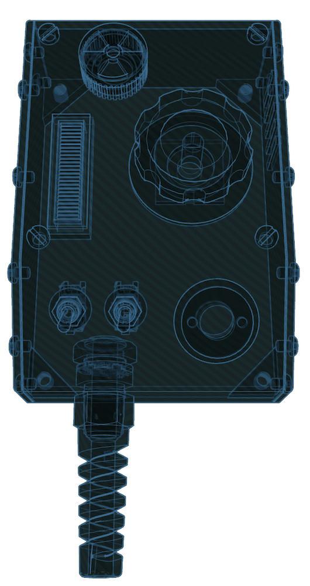
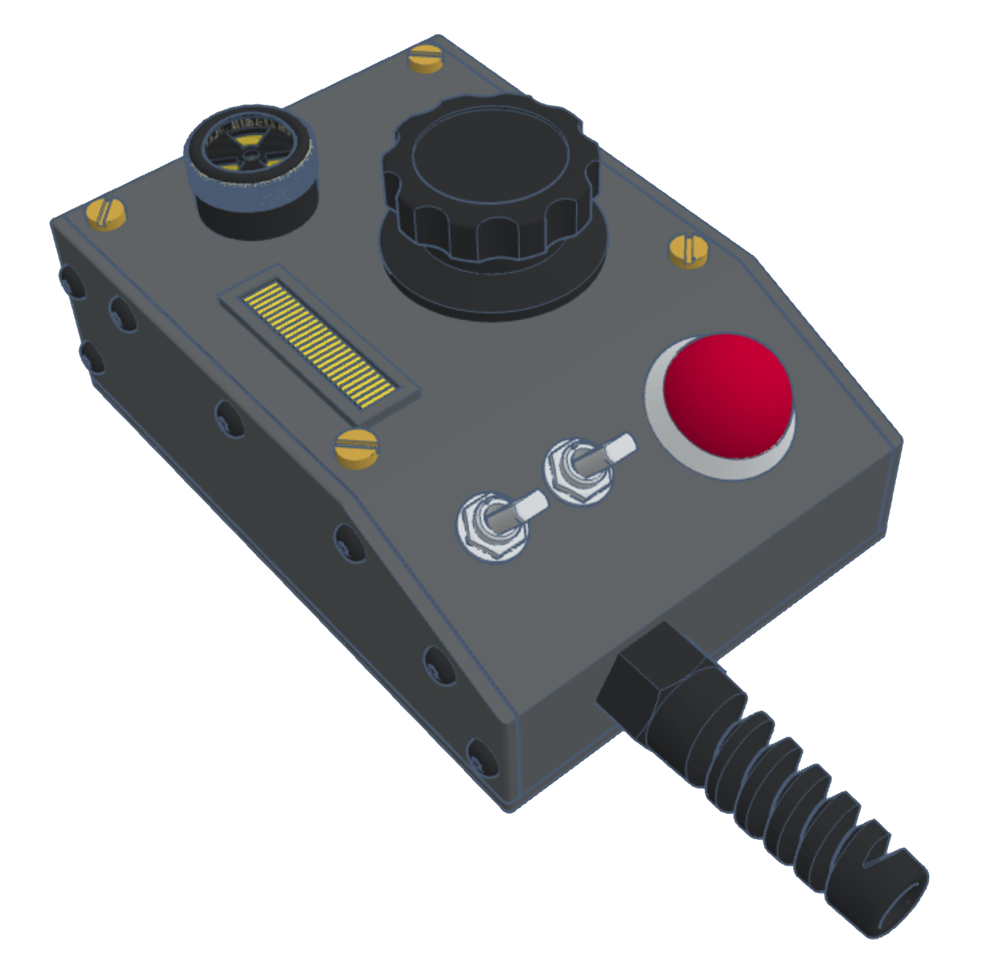

Pack Attenuator (Optional)
"If Egon had kept on using and modifying his pack and modifying it, what might it look like?"
That was the question posed by Jason Reitman to Adam Savage with regards to the 2021 Ghostbusters Afterlife film. So in 2022 Adam Savage's Tested YouTube channel released a video for a "1 Day Build" which featured propmaster Ben Eadie to create a unique item which brings more life to the front of the Proton Pack.

This guide demonstrates the build process for replicating the "Pack Attenuator" device first created by Adam and Ben which fully integrates into the GPStar electronics kit. The ability to control and receive feedback from the devices makes this more than just an aesthetic improvement but a truly usable piece of the pack-wand combination.
Potential Backstory
The device was rediscovered by Phoebe Spengler from notes in her grandfather’s underground workshop on the “Dirt Farm”. The device was theorized and prototyped but never put into service until now.
The attenuator device alters the magnetic field to maintain a correct “rate of feed” of positrons into the cyclotron, thus allowing the user to extend the time to ensnare a ghost by preventing an overheat event within the Proton Pack. Ahead of an overheat (aka. vent sequence) the device will provide physical and audiovisual cues as to the impending event. Interacting with the device will cancel the warning and stave off the venting sequence.
Reference Videos
Attenuator Preview Demonstration (YouTube, August 2023).

Attenuator Backstory and Updates (YouTube, October 2023).

Building Your Own
Please see the dedicated ATTENUATOR_DIY guide for how to construct the electronics for your own device.
GPStar Kits
Please see the ATTENUATOR_FINISHING guide for advice on how to assemble and finish your device.
Firmware Flashing
Please see the ATTENUATOR_FLASHING guide for details on compiling and/or uploading software to your Attenuator controller.
Operation
Physical Operation
While not attached to a compatible Proton Pack (read: standalone mode) the device will simply provide some lights and effects. The left toggle switch will turn on the bargraph animations while the right toggle switch will turn on the LEDs.
Ideally, the device is intended be connected to the GPStar Proton Pack Controller which will allow it to provide all extended functionality. Under normal use the main dial will allow adjusting the overall volume, starting/stopping music tracks, navigating to the next track, and adjusting the effects volume.

Standard Controls
- Left Toggle: Turns the pack on or off, similar to use of the switch under the Ion Arm
- Right Toggle: Turns the Attenuator device itself on or off.
- When off, this turns off the device LEDs and silences any feedback from the buzzer and vibration motor.
- Main Dial - Long Press: Alternates between two modes of operation
- Mode 1 (Default) - Indicated by a high buzzer tone
- Main Dial - Short Press: Starts or stops the current music track
- Main Dial - Double Press: Mutes or unmutes all pack/wand audio
- Main Dial - Turn CW/CCW: Adjusts the overall volume for pack/wand
- Mode 2 - Indicated by a low buzzer tone
- Main Dial - Short Press: Advances to the next music track
- Main Dial - Double Press: Move to the previous music track
- Main Dial - Turn CW/CCW: Adjusts the effects volume for pack/wand
- Mode 1 (Default) - Indicated by a high buzzer tone
Note that during an overheat warning, the device will emit sounds and vibrations in addition to lighting effects as the pack reaches a critical state. At this time the pack operator can turn the primary dial either direction to "attenuate" the pack and cancel the current warning. If the warning time is allowed to expire the the pack will enter the venting sequence.
Lockout Mode (Main Dial)
Lockout mode is a special option for only the main dial to prevent accidental changing of volume:
1) Press down on the main dial and immediately change the Right Toggle to the opposite position. If on, switch off, or vice-versa. 1) Continue to hold down the main dial for another second. If vibration feedback is enabled you will feel a long buzz to indicate when the lockout mode is either enabled or disabled (there will be no buzzer sound like there is during a menu level change).
Buzzer/Vibration Feedback
As part of the user experience, some actions initiated on the device or as a result of using your Proton Pack will trigger haptic feedback via a piezo buzzer and a vibration motor.
These features can be enabled or disabled based on user preference. For more information on how to enable or disable these features via the device preferences, please see the Wireless Operations guide.
Web Operation
For instructions on using the web interface to view the status of, or to control your equipment, please see the Wireless Operations guide.